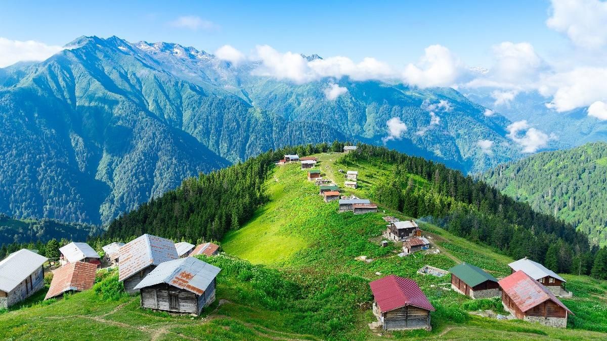

Ayder, Rize'nin Çamlıhemşin ilçesinin 19 km güneydoğusunda yer alan 1350 m rakımda ladin ve kayın ormanlarıyla kaplı bir yayladır. 1300'lü yıllarda Hala Vadisi'nde yaşayanlar tarafından kurulmuştur.
Ayder hiçbir zaman yayla olarak kullanılmamıştır, Ayder'i Hala Vadisi'nde yaşayanlar dinlenme amaçlı kullanmışlardır. Bölge halkı, Hala köyünden yaylalarına göç ederken Ayder'de kaplıcada dinlenirler. Araştırmacı Metehan Mollamehmetoğlu, Ayder'in 1900'lü yıllarda bölge insanının dinlenme yeri olarak kullanıldığını belirtmektedir. Kaplıcanın geçmişi 1700'lü yıllara dayanmaktadır.
Hala Vadisi'nde yaşayanların kullandıkları Ayder, Aşağı Ceymakçur ve Yukarı Ceymakçur adlı üç yayla vardır. Mayıs ayında Ayder haziran ayında aşağı Ceymakçur temmuz ayında Yukarı Ceymakçur yaylalarına gidilir. Ağustos ayında Aşağı Ceymakçur'a gidilirken Ayder'de Hodoc olarak bilinen ot biçme şenlikleri düzenlenir. Eylül ayında da Ayder'e gidilir ve ekim ayında da Hala köyüne dönerlerdi. Bölge sakinleri yakın zamana kadar Ayder'i yayla olarak kulanırlardı. Turizmle beraber Ayder yaylası turizm ve eğlence merkezi oldu
Ayder sözcüğü, standart Ermenicede 'tarla' anlamına gelen ard sözcüğünün Hemşin lehçesindeki eşdeğeridir ve 'tarlalar' anlamına gelmektedir.[1] Hala Vadisi'nde yaşayanların erkekli, kızlı hep beraber türkü söyleyerek, çayırlıkları biçtikleri zamana "Ĥodoç" zamanı denirdi. Günümüzde Ayder'de Ĥodoç günü bilinmekte ama yeni nesil tarafından yapılmamaktadır.
Osmanlı döneminden beri şifalı suyu ile ilgi odağı olan Ayder 1987 yılında turizm merkezi ilan edilmiş, romatizmal hastalıklar, iç hastalıkları, kadın hastalıkları ve cilt hastalıklarına şifa verdiği iddia edilen, 260 metre derinlikten gelen 50 derece sıcaklığındaki kaplıcalarından faydalanılabilmesi için modern turistik tesisler inşa edilmiştir. 260 metre derinlikten çıkan, 55 derecelik kaplıca sularının başta romatizma, kireçlenme olmak üzere pek çok hastalığa iyi geldiğini belirtiyor. Kaplıca sularından fayda görmek için havuza girmek, özel banyo almak ya da içmek mümkün. Karadeniz Teknik Üniversitesi'nden Fizik Tedavi ve Rehabilitasyon Uzmanı Mustafa Güler yaptığı açıklamada, kaplıca sularının romatizmal eklem hastalıkları, sinir, sindirim, dolaşım sistemi hastalıklarıyla idrar yolları ve üreme organı hastalıklarına iyi geldiğini belirtmiştir. Kaplıca suları ayrıca, egzama ve sedef, ergenlik sivilceleri gibi cilt hastalıklarının tedavisinde de kullanılmaktadır. Tabii ki, kaplıcaya girmeyi sakıncalı kılacak durumlar da var. Örneğin kanamalı rahatsızlıklar, yüksek tansiyon ve kalp rahatsızlıkları bu durumlardan bazılarıdır. Bu nedenle kaplıcaya girmeden önce mutlaka uzman bir doktora danışmak şart. Zaten Ayder Kaplıcaları'nda görev yapan bir uzman doktor da bulabilirsiniz. Uzmanlar ayrıca kaplıcada günde ikiden fazla banyo alınmaması gerektiğini hatırlatıyor ve 4 banyodan sonra kendisini halsizlikle belli eden ve Kaplıca Krizi olarak tanımlanan bir rahatsızlığın bazı kişilerde görülmesinin normal olduğunu belirtmekteler.